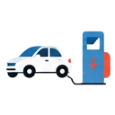

個人向け
電気自動車などのクリーンエネルギー自動車や、自宅の充電設備には、国と自治体の補助金があります。
どんな補助金か
電気自動車（EV）やプラグインハイブリッド車（PHEV）を買うとき、国の補助金（CEV補助金）を使える場合があります。車を買う個人も、事業で車を使う法人も対象になる制度です。
補助金は、車両の購入費の一部を補うものです。金額は車種、メーカーの評価、登録の時期などで変わります。ここでは仕組みを説明し、金額は公式の情報で確かめてください。
自宅に充電設備や、車の電気を家で使うV2H（ビークル・トゥ・ホーム）を置くときにも、国や自治体の補助がある場合があります。


国の補助金（CEV補助金）経済産業省の「クリーンエネルギー自動車導入促進補助金（CEV補助金）」は、電気自動車、プラグインハイブリッド車、燃料電池自動車などが対象です。受付は次世代自動車振興センターが行っています。
募集の状況、対象の車種、金額、申請の方法は、CEV補助金の公式ページで確認できます。
2026年には、補助額の見直しが報じられています。見直しは車種ごとに行われ、登録の時期によって補助額が変わることがあります。購入を決める前に、最新の内容を確認してください。
制度の金額・補助率・対象経費は、年度や公募回ごとに決まります。ここでは全体像を説明し、数字は原則として書いていません。最新の内容は公式の情報で確認してください。

 充電設備・V2H
充電設備・V2H
充電設備やV2Hの補助は、国の制度と、自治体の制度があります。国の制度は、設置する工事の内容や、設置する場所（自宅・集合住宅など）で条件が変わります。
賃貸住宅に住んでいる場合は、大家さん（管理会社）の承諾が必要になることがあります。マンションの場合は、管理組合の承認が必要になることもあります。

 申請の流れ（一般的な例）
申請の流れ（一般的な例）
- 1使える補助金を確認する（国の制度と、お住まいの自治体の制度）
- 2車種と販売店を決め、見積もりを取る
- 3補助金の申請の条件を確認し、購入（契約）の順番を決める
- 4車を登録する（登録の日付が条件になる制度があります）
- 5申請書類をそろえて、申請する
- 6審査のあと、補助金が支払われる（多くの補助金は後払いです）
購入の契約や支払いの前に、交付の決定が必要な制度があります。順番を間違えると、補助の対象外になることがあるので、必ず先に制度の要領を確認してください。

 自治体の補助金
自治体の補助金
都道府県や市区町村が、国の補助に上乗せして補助をしている場合があります。国の補助と自治体の補助を、同じ車で併用できるかは制度ごとに違います。
お住まいの地域の制度は、市区町村別の補助金から探せます。

 購入の前に確認したいこと
購入の前に確認したいこと
- 車種が、補助の対象になっているか（車種の一覧は公式の情報で確認する）
- 新車か中古車か。中古車が対象になるかは、制度の要領で確認する
- 登録の日付と、補助金の申請期限
- 充電設備を同時に買うなら、その補助が使えるか（車と充電設備は、別の制度のことがあります）
- 一定の期間は、車を保有し続けることが条件になっている場合がある
- 予算に達すると、受付が早めに終わることがある

よくある質問
Q. 電気自動車を買う予定がなくても、補助金を調べてもいいですか？
A. はい。補助金は制度ごとに条件があるので、まずは対象になるかを公式の情報で確認すると安心です。
Q. ハイブリッド車（HEV）も対象ですか？
A. CEV補助金は、電気自動車、プラグインハイブリッド車、燃料電池自動車が対象として案内されています。HEVは対象外です。
Q. 補助金をもらってから車を買えますか？
A. 多くの補助金は、購入のあとに申請して、後から支払われます。購入の前に交付の決定が必要な制度もあるので、順番は必ず確認してください。
Q. 申請を代わりにしてもらえますか？
A. 販売店や、申請を支援する事業者に相談できる場合があります。費用や手続きの範囲は、事業者ごとに違うので、契約の前に確認してください。

この制度ができた背景と目的
3つのポイント
- 何のため？ 産業競争力の強化とCO2の削減。運輸部門は、国のCO2排出量の約2割を占める。
- どんな目標？ 「2035年までに、乗用車の新車販売で電動車100％」（グリーン成長戦略）。
- いまの形は？ 2024年度からリニューアルした「CEV補助金」。充電設備やV2Hの補助は別の枠で実施。
（国の約2割）
補助
価格の低減
制度のあゆみ
- 「2050年カーボンニュートラルに伴うグリーン成長戦略」で、2035年までに乗用車新車販売で電動車100％の目標が示される（策定時期は資料により表記が異なる）
- 令和3年度の「クリーンエネルギー自動車導入促進補助金」の応募要領を、次世代自動車振興センターが作成。令和2年度第3次補正の交付規程では「災害時にも活用可能な」車の導入が趣旨に
- 充電インフラの検討会を設置（6月）。充電器の設置目標を2030年までに30万口とする指針を公表（10月）
- 「CEV補助金」としてリニューアル
- 令和7年度補正予算が成立。CEV補助金に約1,100億円、充電設備に510億円が措置される
- 日米関税協議の合意を踏まえた補助上限の見直しが、この日以降に新車登録された車両に適用
くわしく知る
できた経緯を、くわしく
経済産業省の資料では、CEV補助金は、「グリーン成長戦略」などが掲げる「2035年までに乗用車新車販売で電動車100％」という目標の実現に向け、クリーンエネルギー自動車の普及を促すものと説明されています。ここでいう電動車は、EV、FCV、PHEV、HEVを指します。
次世代自動車振興センターの資料では、令和3年度の補助金名は「クリーンエネルギー自動車導入促進補助金」でした。令和2年度第3次補正予算の交付規程には、災害時にも活用可能なクリーンエネルギー自動車等の導入費用を助成する旨が定められています。平成26年度にも、同じような名称の交付規程があります。
創設時の正確な経緯を述べた一次資料は、今回の確認では見つかりませんでした。
背景にある課題
経済産業省の資料は、運輸部門が国のCO2排出量の約2割を占めるとし、補助によって初期需要の創出と価格の低減を促すと説明しています。
目的・狙い
経済産業省の資料によると、電気自動車等の導入費用を支援することで、産業競争力の強化とCO2の削減を実現し、暮らし関連分野のGX（グリーン・トランスフォーメーション）を加速させることが目的とされています。
補助額は、車両の性能の評価に加え、充電インフラの整備や供給の安定性の確保など、自動車メーカーの取り組みも総合的に評価して決まる、と案内されています。
充電設備・V2Hの位置づけ
経済産業省は2023年10月、充電器の設置目標を2030年までに30万口（急速3万口、普通27万口）とする指針を公表しました。従来の15万口からの倍増で、複数口の充電器も1口と数える定義の変更を伴います。
充電設備の補助は、令和7年度補正予算で510億円（2025年12月16日に補正予算が成立）。V2H（車と家をつなぐ充放電設備）の国の補助は、経済産業省が予算を措置し、次世代自動車振興センターが対象設備の指定と申請の受付を担います。自治体のV2H補助は、国の補助と併用できる場合があります（併用の可否は自治体ごとに異なります）。
最近の見直し
令和7年度補正予算で、CEV補助金に約1,100億円が措置されました。日米関税協議の合意を踏まえて補助上限額が見直され、2026年1月1日以降に新車登録された車両に、見直し後の補助額が適用されます。
見直しで減額となる車種について、令和8年12月末まで現行の補助額を維持する旨の記載があるとの情報もありますが、原資料の条文は確認できていないため、必ず公式の案内で確認してください。
当サイトの見方（解釈）
EVの補助金は、「車を買う人への補助」だけでなく、充電インフラやメーカーの取り組みの評価まで含めた、産業政策の色が濃い制度です。そのため、制度の名称や補助額、対象車種が、年度やタイミングで変わりやすい点に注意が必要です。
購入を検討する場合は、国のCEV補助金に加えて、お住まいの自治体の補助（車両・V2H・充電設備）を併用できるかを、あわせて確認すると、実質負担が変わります。
出典（確認した日：2026年10月14日）
- CEV補助金 令和7年度補正の概要（経済産業省）
- CEV補助金（令和6年度 リニューアル）（経済産業省）
- 令和7年度補正 CEV補助金（経済産業省）
- 充電・充てん設備等導入促進補助金（令和7年度補正）（経済産業省）
- 充電インフラの整備・普及（経済産業省）
- 令和2年度第3次補正 交付規程（次世代自動車振興センター）
- グリーン成長戦略に関する県の資料（三重県）
上の内容は、出典に書かれた公開情報の要約です。制度の最新の内容は、必ず公式の公募要領で確認してください。